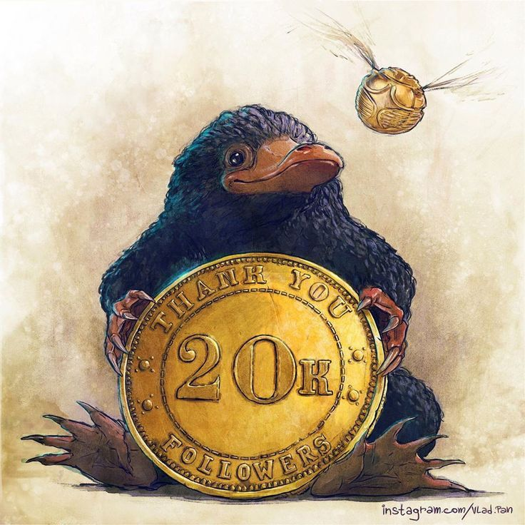

Animales Fantasticos
1. Escarabato
«El escarbato es una bestia del Reino Unido que tiene un sedoso pelaje negro y un hocico largo.»
| Escarbato | |
|---|---|
| Información de la especie | |
| Pelaje | Negro , Castaño , Verde azulado |
| Nativo de | Gran Bretaña |
| Mortalidad | Mortal |
| Distinciones | Similar a un roedor, Hocico largo, Atraído a objetos y metales brillantes, Experto en buscar tesoros, Puede destruir ambientes interiores |